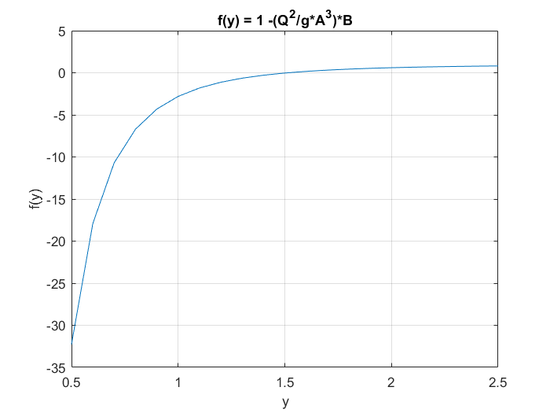
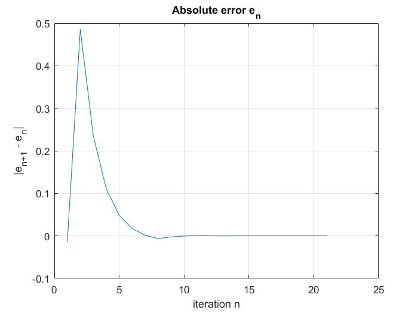

Contents
Bisection Method for finding zeros of a function
clear all;
close all;
Function definition
Q = 20; g = 9.81;
A = @(y) 3*y + y^2/2;
B = @(y) 3 + y;
f = @(y) 1 -(Q^2/(g*(A(y)^3)))*B(y);
a=0.5; b=2.5;
Plotting graph of f(y)
X = a:0.1:b;
Y = a:0.1:b;
n = 1;
for x = a:0.1:b
Y(n) = f(x);
n = n + 1;
end
plot(X,Y); grid on;
xlabel("y");
ylabel("f(y)");
title("f(y) = 1 -({Q^2}/{g*A^3})*B")

Stopping criterium
TOL = 10^(-6);
Nmax = floor ( log((b-a)/TOL) / log(2) ) + 1
pvalues=zeros(Nmax,1);
Nmax =
21
Iteration Scheme
for i = 1 : Nmax
p = (a+b)/2;
pvalues(i)=p;
sfa = f(a);
sfp = sign(f(p));
fprintf( '\t\t %3d \t (%.6f,%.6f) \t %.10f \n', i, a, b, p)
if ( (b-a)<2*TOL || sfp == 0 )
break
elseif ( sfa * sfp < 0 )
b = p;
else
a = p;
sfa = sfp;
end
end
1 (0.500000,2.500000) 1.5000000000
2 (1.500000,2.500000) 2.0000000000
3 (1.500000,2.000000) 1.7500000000
4 (1.500000,1.750000) 1.6250000000
5 (1.500000,1.625000) 1.5625000000
6 (1.500000,1.562500) 1.5312500000
7 (1.500000,1.531250) 1.5156250000
8 (1.500000,1.515625) 1.5078125000
9 (1.507813,1.515625) 1.5117187500
10 (1.511719,1.515625) 1.5136718750
11 (1.513672,1.515625) 1.5146484375
12 (1.513672,1.514648) 1.5141601563
13 (1.513672,1.514160) 1.5139160156
14 (1.513916,1.514160) 1.5140380859
15 (1.514038,1.514160) 1.5140991211
16 (1.514038,1.514099) 1.5140686035
17 (1.514038,1.514069) 1.5140533447
18 (1.514053,1.514069) 1.5140609741
19 (1.514053,1.514061) 1.5140571594
20 (1.514053,1.514057) 1.5140552521
21 (1.514053,1.514055) 1.5140542984
Absolute Error computation
plast =p;
errors=pvalues-plast*ones(Nmax,1);
fprintf('Approximate value | Absolute Error\n\n')
fprintf(' %.10f | %.10f\n',[pvalues errors]');
figure; plot(errors); grid on;
xlabel("iteration n");
ylabel("|e_{n+1} - e_n|");
title('Absolute error e_n')
Approximate value | Absolute Error
1.5000000000 | -0.0140542984
2.0000000000 | 0.4859457016
1.7500000000 | 0.2359457016
1.6250000000 | 0.1109457016
1.5625000000 | 0.0484457016
1.5312500000 | 0.0171957016
1.5156250000 | 0.0015707016
1.5078125000 | -0.0062417984
1.5117187500 | -0.0023355484
1.5136718750 | -0.0003824234
1.5146484375 | 0.0005941391
1.5141601563 | 0.0001058578
1.5139160156 | -0.0001382828
1.5140380859 | -0.0000162125
1.5140991211 | 0.0000448227
1.5140686035 | 0.0000143051
1.5140533447 | -0.0000009537
1.5140609741 | 0.0000066757
1.5140571594 | 0.0000028610
1.5140552521 | 0.0000009537
1.5140542984 | 0.0000000000
